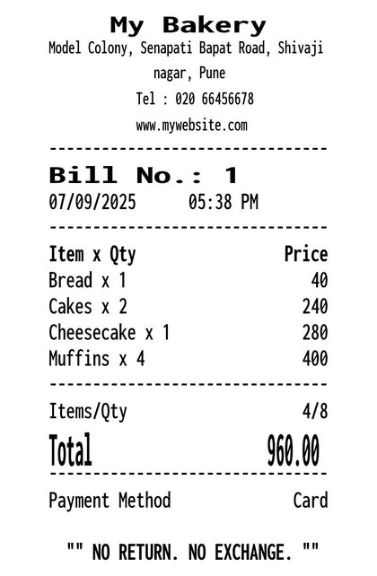
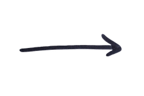

Reading the till…
Every time it wakes it writes a line here, whether or not it needed you. The days it stayed quiet are the point.
Web search is not configured yet. Set TAVILY_API_KEY and it will look for markets, note the application deadlines and stall fees, and tell you what last year's attendance actually was.


Names, prices and how fast each thing sells come straight off the bills. Nothing here was typed in.
A receipt cannot say what something cost to make, and cost decides how much gets baked. It guessed from one food cost ratio and marked every guess. Correct one and the service level moves while you watch.
One moment.
The one thing a receipt cannot tell me is what each of these costs you to make, and that is what decides how many I bake. Here are my guesses. Correct any that are wrong, or leave them and tell me later.
It wakes on its own at close of trade, before the night shift, and at each supplier cutoff. Ask it something, or set one of these off now.